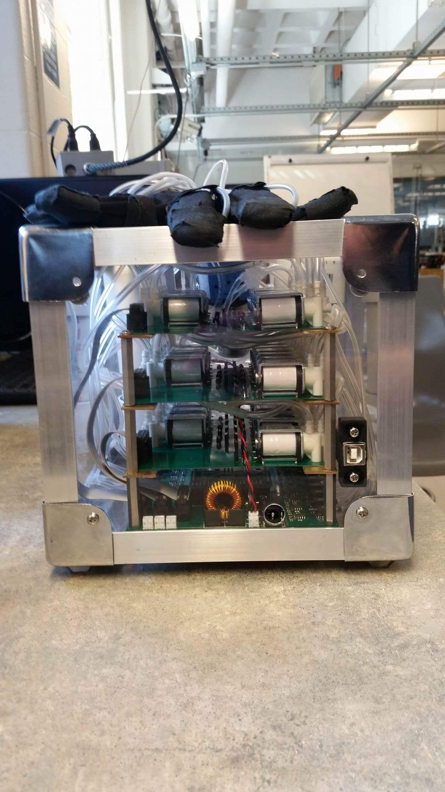
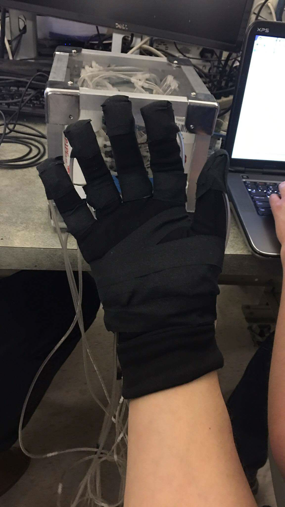
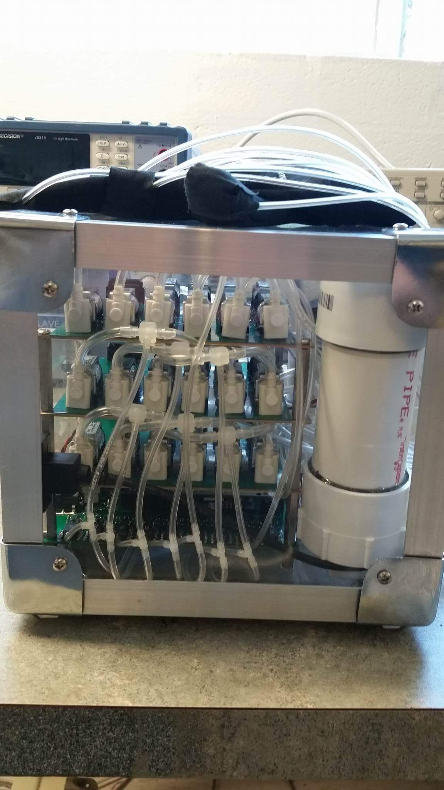
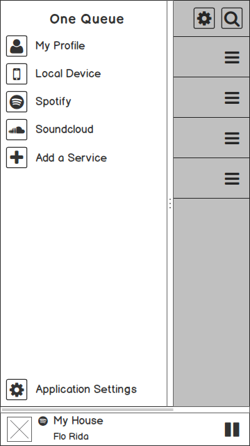

Pneumatic Tactile Feedback Glove



Working with four other Northeastern University students, I developed a prototype feedback device for use with virtual reality. I pushed for a familiar method of feedback and came up with the idea of using pneumatics to apply pressure to the hand. I worked on the project from its initial conception through the synthesis of the prototype and demo. To our excitement, the project earned second place at the semesters Capstone design competition. The system precisely distributes pneumatic pressure to a collection of pouches on a glove. The pouches are inflated and deflated based on commands received over a serial connection from a computer. Leveraging the large number of GPIOs on the Arduino Mega, it rapidly measures the pressure of each pouch and actuates specific solenoid valves to maintain a constant experience for the user. We integrated the serial communication in a demo using Unity and the Leap Motion allowing users to feel objects they touch in VR.
Fibonacci Lattice Sphere
In this project, I wrote an algorithm to calculate the nearest point on a Fibonacci Lattice Sphere. I then explored various methods of parallelizing it using OpenMP, MPI, and OpenACC. Using maps and some trigonometric calculations I wrote an elegant algorithm and achieved constant runtime regardless of the number of points on the lattice (excluding setup costs). I then explored divide and conquer techniques along with other structural algorithm modifications to parallelize batch processing of randomly generated points with the goal of minimum runtime.
Broadcom WiFi Optimization
For this project I worked with two other Northeastern University students in my Wireless Sensor Networks class to measure the difference in power consumption, latency, and reliability of a 802.11 Power Save connection for varying device listen intervals. This project was motivated by two major factors: the high power cost of WiFi listening for always online always connected devices, and the variety in performance of access points. The goal of the project was to make a wireless driver adapt to the access point it connects to by configuring it's listen interval to match the amount of time the access point would buffer packets. Using a Broadcom WICED development kit and the WICED SDK I tested various listening frequencies and measured the power consumption.
OneQueue



I worked on this project for my Innovation class at northeastern University with four other undergraduate students. I drew my inspiration for this project comes from SONOS with the goal of making it more accessible and user friendly. We explored the idea of integrating music streaming services into a single platform and then allowing users to create and contribute to live shared queues on local wireless networks. Users would bring services attached to their account to queues they joined and have them removed when they left. The most innovative part of this project was the idea to have users be able to share and contribute music from the comfort of their own phone while allowing that music to be played on existing speakers. Throughout the project we focused on the business side of things, leaving the product in the wireframe stages of development.